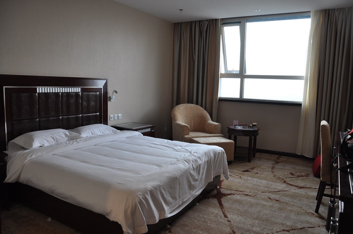
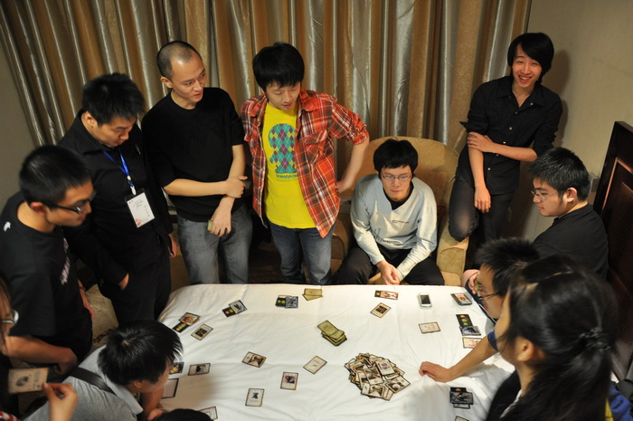
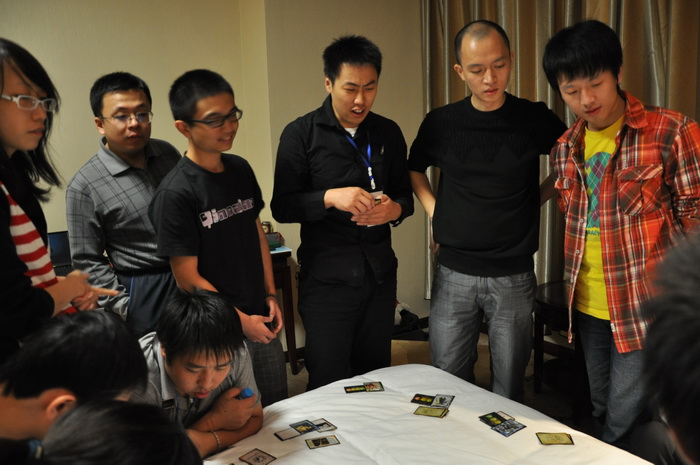
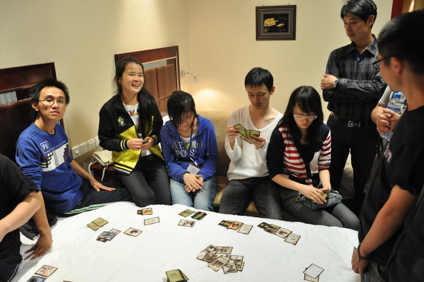

宿舍里的故事
首页
五子棋新闻
#1 宿舍里的故事 作者：小丸.net 发表时间：2011-10-4 21:13:51




 ［ 以和为贵 于 2011-10-9 2:43:34 时花20金币送鲜花一朵］
#2 Re:宿舍里的故事 作者：伤情路 发表时间：2011-10-4 21:19:19
第四幅图的九字太像关二哥了！膜拜
#3 Re:宿舍里的故事 作者：米勒 发表时间：2011-10-4 21:20:57
三国杀？这个游戏还真好玩，讲究策略和配合
#4 Re:宿舍里的故事 作者：天真的二两 发表时间：2011-10-4 21:26:58
这个是晚上的重点节目、、、
#5 Re:宿舍里的故事 作者：冰雪笑醉 发表时间：2011-10-4 21:35:00
 谁赢了？
谁赢了？
#6 Re:宿舍里的故事 作者：极地剑客 发表时间：2011-10-4 21:53:33
有好几个MM啊
#7 Re:宿舍里的故事 作者：团子亲卫队 发表时间：2011-10-4 21:59:58
道长用的贾诩吧。。。
［此帖子已被 团子亲卫队 在 2011-10-4 22:00:14 编辑过］
#8 Re:宿舍里的故事 作者：战乱 发表时间：2011-10-4 22:36:43
12人局，时间好长。。
#9 Re:宿舍里的故事 作者：蓝天蓝 发表时间：2011-10-4 23:04:27
欣赏赛场外选手的风采
#10 Re:宿舍里的故事 作者：浪人 发表时间：2011-10-4 23:23:22
怎么没有诈金花呢？
#11 Re:Re:宿舍里的故事 作者：掌棋宣传员 发表时间：2011-10-4 23:28:28
引用：
原文由 浪人 发表于 2011-10-4 23:23:22 :
怎么没有诈金花呢？
大赌窝里怎么会象三国杀似的允许外人参观拍照....
#12 Re:宿舍里的故事 作者：小丸.net 发表时间：2011-10-4 23:51:31
今天我忠臣指挥战斗，挖出了所有反贼与内奸。。。。主忠全活完胜。。。。。
我们玩的是动脑游戏，那些来钱的游戏神马都浮云。。。。
#13 Re:宿舍里的故事 作者：浩瀚铭剑 发表时间：2011-10-5 1:20:38
 可以买鸟么？
可以买鸟么？
#14 Re:宿舍里的故事 作者：徐来 发表时间：2011-10-5 7:21:05
 没事的时候还是最喜欢下棋了
没事的时候还是最喜欢下棋了［ 有志青年 于 2011-10-5 10:23:58 时奖励此帖[金币加 100 威望加1］
#15 Re:宿舍里的故事 作者：有志青年 发表时间：2011-10-5 10:24:20
等楼上的复盘棋谱哟
#16 Re:Re:宿舍里的故事 作者：徐来 发表时间：2011-10-5 10:25:35
引用：
原文由 有志青年 发表于 2011-10-5 10:24:20 :
等楼上的复盘棋谱哟
 对手失误漏杀。。。。
对手失误漏杀。。。。
#17 Re:宿舍里的故事 作者：雅匪 发表时间：2011-10-8 22:23:57
电影般的色彩和画面啊
#18 Re:宿舍里的故事 作者：以和为贵 发表时间：2011-10-9 2:43:25
我是不明真相的围观群众。。。